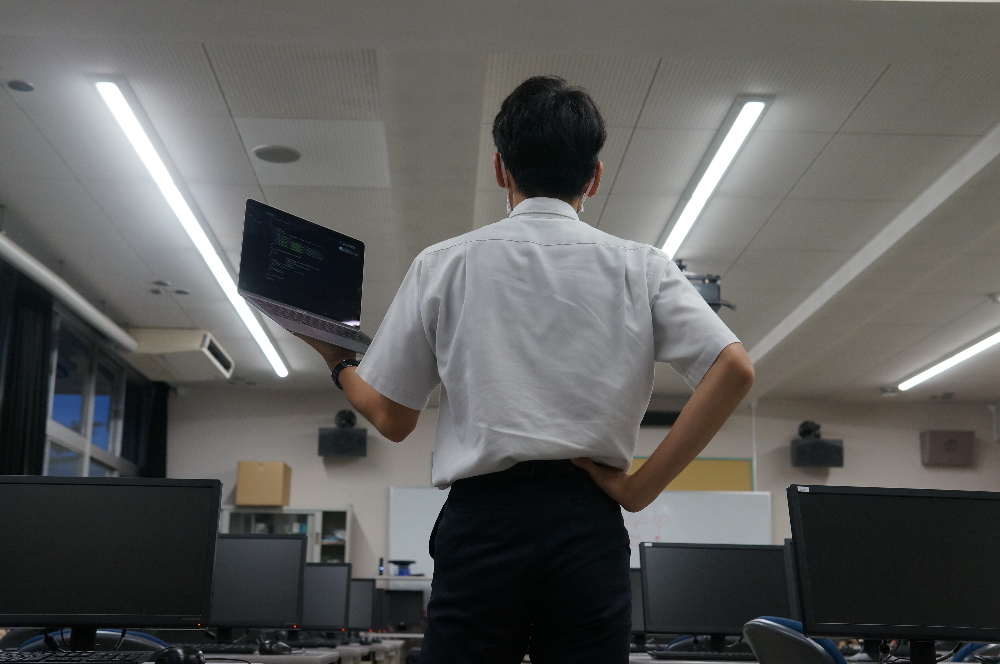

テーマ[RE:START]
2年間失われた栄東の輝きを再開させるという
思いから, 「re:start」となりました。
このページについて
（公開が遅れたことをお詫びします。）
このページでは, 中学生の, 中学生による,
中学生のための文化祭展示情報をお伝えします。
主に全生徒の作品の展示である「学年展示」
文化祭に出展する部活動の紹介「部活展示」
有志生徒によるステージ企画「中学有志企画」
最後に, サイトを運営する際の「諸注意」
の4項目を作成しました。サイト上部から飛べます。
スマートフォンやタブレットでの閲覧を推奨します。
生徒会長・サイト作成者から一言
生徒会長 Nさんから一言
今回の栄東祭のテーマは『re:start』。
このテーマには感染症拡大によって止まってしまった
栄東の行事・伝統を私たちの手で再出発させるという
また, この文化祭を開催するにあたり中高ともに
文化祭実行委員会が中心となって準備をすすめて
参りました。そして私自身も実行委員会に加わり
準備をする中で, 校訓「今日学べ」の教えのもと,
自ら企画を考えて実行することこそが栄東の伝統と
なっているのだと実感いたしました。
それでは, 栄東の伝統と私達の思いが込められた
令和4年度栄東文化祭をお楽しみください。
サイト作成者 Yから一言
情報技術同好会部長のY.Iです。
中学文化祭Webサイトを訪れていただきありがとう
ございます。今まで自分の制作したものを学校の
みんなに見てもらう機会があまりなかったので
今回, 自分としても新たなRe:Startが切れたと
思います。
僕ら2人で作ったサイトをどうぞお楽しみください。
サイト作成者 Eから一言

こんにちは。サイト作成者のEです。
情報技術同好会副部長です。
サイト作成の決定が10日前だったもので,
今更クオリティが低かったと後悔しています。
サイトをつくるにあたり協力してくれた皆さん
にこの場で感謝を申し上げます。
（来年サイトを作るときは2ヶ月前から始めます）